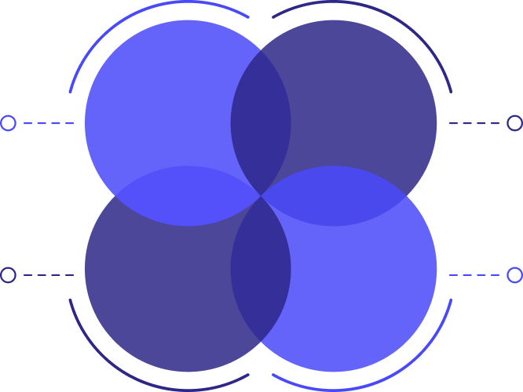

<section class="page max-w-full">
  <div class="py-12">
    <h2
      class="7xl:text-6xl 3xl:text-5xl text-4xl 7xl:leading-tight transition-all text-center font-bold text-black xl:mb-10 mx-auto"
    >
      Process <span class="text-primary-500"> /Methodology</span>
    </h2>

    <div class="grid 5xl:grid-cols-4 gap-5 items-center my-12">
      <div class="flex 5xl:justify-end 5xl:items-end items-center justify-between 5xl:flex-col xl:flex-row flex-col 8xl:gap-40 5xl:gap-32 gap-10">
        <div class="w-60 5xl:text-end ms-auto xl:me-0 me-auto">
          <h5 class="text-xl text-primary-500 font-bold">Assessment</h5>
          <p class="text-gray-700 !leading-5">
            Analyze existing data and systems.
          </p>
        </div>

        <div class="w-60 5xl:text-end ms-auto 5xl:me-0 me-auto">
          <h5 class="text-xl text-primary-500 font-bold">Validation</h5>
          <p class="text-gray-700 !leading-5">
            Ensure data integrity and accuracy post-migration.
          </p>
        </div>
      </div>

      <div class="relative 5xl:col-span-2">
        

        <div class="7xl:text-5xl xl:text-4xl text-3xl font-black text-white rounded-full absolute top-2/4 -translate-y-2/4 left-[35%] -translate-x-[35%]">A</div>

        <div class="7xl:text-5xl xl:text-4xl text-3xl font-black text-white rounded-full absolute top-2/4 -translate-y-2/4 right-[35%] -translate-x-[35%]">C</div>

        <div class="7xl:text-5xl xl:text-4xl text-3xl font-black text-white rounded-full absolute left-2/4 -translate-x-2/4 top-[30%] -translate-y-[30%]">B</div>

        <div class="7xl:text-5xl xl:text-4xl text-3xl font-black text-white rounded-full absolute left-2/4 -translate-x-2/4 bottom-[25%] -translate-y-[25%]">D</div>

        

        

        

        

      </div>

      <div class="flex 5xl:justify-end 5xl:items-end items-center justify-between 5xl:flex-col xl:flex-row flex-col 8xl:gap-40 5xl:gap-32 gap-10">
        <div class="w-60 me-auto 5xl:ms-0 ms-auto">
          <h5 class="text-xl text-primary-500 font-bold">Planning</h5>
          <p class="text-gray-700 !leading-5">
            Create a detailed data migration strategy.
          </p>
        </div>

        <div class="w-60 me-auto xl:ms-0 ms-auto">
          <h5 class="text-xl text-primary-500 font-bold">
            Migration Execution
          </h5>
          <p class="text-gray-700 !leading-5">
            Transfer data securely to the new environment.
          </p>
        </div>
      </div>
    </div>
  </div>
</section>
